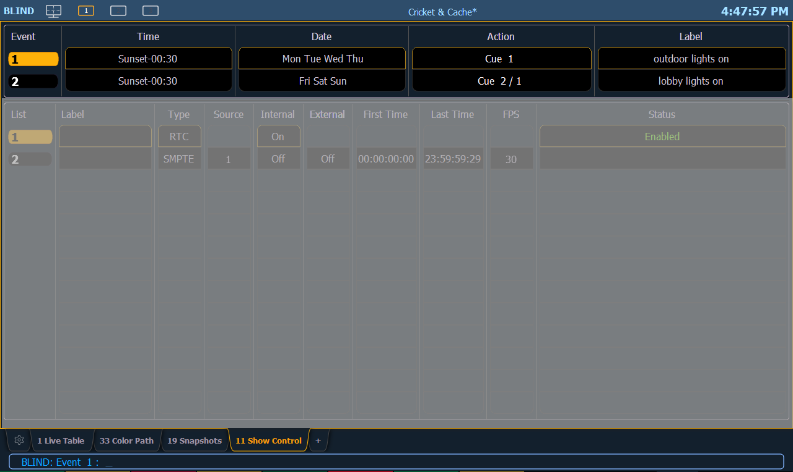

The upper portion of the show control display shows the specific events that are contained in each event list. An event consists of an input condition, such as a timestamp, real time, an address, or input value, and an action. An event plays back (or “fires”) when the input condition is met (for example, the timecode passes the given timestamp, or a contact closure at the given address changes). Multiple events can be fired at the same time; however a single action can only be placed in each event.
Eos Family consoles support three event actions:
Note: If another macro is fired before the first macro completes, the first macro will finish its action before the second is started.
Note: If a macro is selected as the intended action, it will fire using the macro mode specified. Please see Macro Editor Display for information on macro modes.

Softkeys are available for the various event options:
Note: The event number is not fixed, it is just provided as a way to select an event. For example, in time code lists, the events are always chronological. The event number will change to match the chronology.
Note: Time can be assigned to a list of events by using a range.